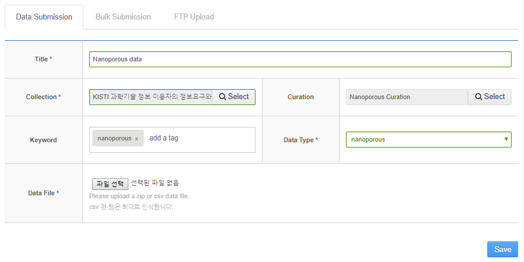

기본개념 소개
관련된 개념들은 다음 링크를 참조하십시오. 링크
내 컬렉션 관리
내가 생성한 컬렉션들만을 대상으로 관리합니다.
- 메뉴의
콘텐츠/데이터-데이터 관리로 이동합니다.
- 제목(title) : 링크를 누르면 컬렉션 상세보기 페이지로 이동합니다.
- 상태(Status) : 컬렉션에 포함된 상태별 데이터셋의 수를 나타냅니다. 데이터셋은 생성된 이후 처리과정과 출판과정을 거칩니다. 처리등의 과정을 모두 통과한 데이터셋은 S, 실패한 경우는 F, 처리 이전은 Q로 표시됩니다.
- 관리(Manage) : 컬렉션에 포함된 데이터셋들을 관리합니다. 데이터셋은 처음 생성되었을 때 처리과정과 출판과정이 자동으로 실행됩니다. 데이터셋의 처리과정이 변경된 경우 처리과정과 출판과정을 수동으로 진행할 수도 있는데, 이때 관리 메뉴를 사용합니다.
- 삭제(Drop) : 컬렉션을 삭제합니다. 컬렉션에 포함된 데이터셋들이 남아 있는 경우 삭제는 허용되지 않습니다.
내 데이터셋 관리
-
메뉴의
콘텐츠/데이터-데이터 관리로 이동합니다.

-
My Data탭에서 관리를 원하는 컬렉션의Manage버튼을 클릭합니다.

-
개별 데이터셋의 관리와 관련된 메뉴는 다음과 같습니다.
Select Page: 현재 보이는 페이지의 모든 데이터셋을 일괄 선택Select All: 모든 데이터셋을 일괄 선택. 이 경우 오른편 상태를 나태내는 선택박스에서 “Success”, “Fail”, “Queue”의 한 상태를 선택한 경우만 동작함refresh: 현재 창에 보이는 데이터셋들의 상태를 다시 불러옴Curate: 선택한 데이터셋들에 대한 처리과정을 다시 진행함 데이터셋은 처음 생성되었을 때 처리과정과 출판과정이 자동으로 실행됩니다. 데이터셋의 처리과정이 변경된 경우 등 필요에 따라 처리과정과 출판과정을 수동으로 진행할 수도 있습니다.Delete: 선택한 데이터셋들을 삭제함
-
각 시뮬레이션 데이터들에 대한
상태(Success, Failed, Queue)별로 개별 선택하거나 일괄 선택하여 삭제할 수 있습니다.
-
상단 검색 바를 이용하여
Title및datasetId검색이 가능하며 시뮬레이션 데이터의 타이틀을 클릭하여 상세보기로 이동할 수 있습니다.
나만의 데이터 처리 모듈 선택
데이터를 제출할 때 데이터 처리 모듈을 선택하는 방법입니다.
-
포털 메인 메뉴, Data의 하위 메뉴인
Data Submission을 클릭합니다.
-
시뮬레이션 데이터 제출 시에
Data Submission탭에서데이터 처리(curate) 모듈을 선택할 수 있습니다. (미선택 시 Data Type 기본 모듈로 처리됩니다.)
-
Curation 항목의
Select버튼을 클릭하면Curation Popup페이지가 나타나며, 기본 모듈을 선택하거나, 기타 등록된 데이터 처리 모듈을 선택할 수 있습니다.
-
이렇게 데이터 제출 시에 데이터 처리 모듈을 제공하여 사용자가 지정한 데이터 처리 방식으로 시뮬레이션 데이터를 처리할 수 있습니다.
 -
Bulk Submission도 같은 방식으로서, 시뮬레이션 데이터 제출 시에Data Submission탭에서데이터 처리(curate) 모듈을 선택할 수 있습니다. (미선택 시Data Type기본 모듈로 처리됩니다.)
-
Bulk Submission도 제출 시에 데이터 처리 모듈을 제공하여 사용자가 지정한 데이터 처리 방식으로 시뮬레이션 데이터를 처리할 수 있습니다.